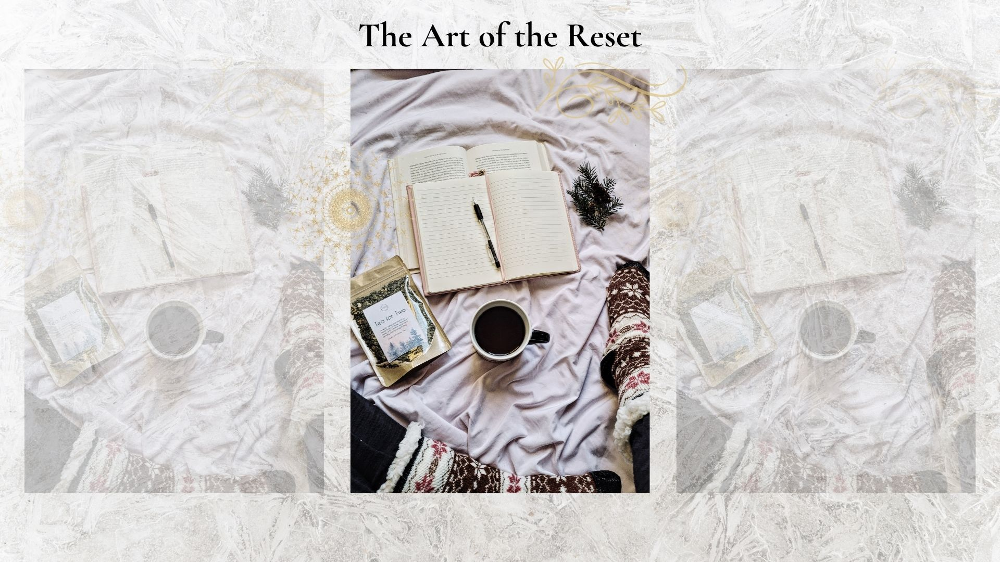

The Art of the Reset
10 simple ways to reset your mind and body
Life can feel overwhelming sometimes.
Between responsibilities, work, relationships, family, and everything happening inside our own minds, it is easy to reach a point where we feel mentally and emotionally drained.
When that happens, we often think we need to completely change everything.
A new routine. A fresh start. A perfectly organized home. More motivation.
But sometimes, what we really need is simply a reset.
🌿 What Is a Reset?
A reset does not mean starting your life over.
It means taking a moment to pause, reconnect with yourself, and choose what you need next.
1. Take a Few Deep Breaths
When we are stressed or anxious, our bodies often enter a state of tension without us even realizing it.
Pause for a moment.
Take a slow breath in.
Then slowly breathe out.
You do not have to fix everything right now. Start by giving your body a moment to slow down.
Even one minute of intentional breathing can help create a sense of calm.
2. Step Away From Your Phone
Constant notifications, messages, and scrolling can leave our minds feeling overstimulated.
Try putting your phone down for a few minutes.
Step outside. Sit somewhere quiet. Make a cup of tea. Allow yourself to exist without needing to respond to anything.
You do not have to be constantly available to everyone.
3. Reset One Small Space
Your environment can have a powerful effect on how you feel.
You do not need to clean your entire house.
Start with one small space.
- Clear off your nightstand.
- Make your bed.
- Wash the dishes in the sink.
- Fold the blanket on the couch.
- Clear one small area of your desk.
Sometimes creating a little more physical space can help us feel mentally lighter too.
4. Move Your Body
Movement does not have to mean an intense workout.
A reset might look like:
- Taking a short walk.
- Stretching for five minutes.
- Dancing to your favorite song.
- Going outside for fresh air.
- Doing gentle yoga.
Your body carries stress too. Movement can be a way to release some of the tension you have been holding.
5. Write It Down
Sometimes our minds feel overwhelming because we are trying to hold too much at once.
Grab a notebook and write down everything that is on your mind.
Do not worry about making it organized or meaningful. Just let the thoughts come out.
You can write about your worries, your to-do list, something that upset you, or something you are looking forward to.
You do not have to solve every thought. Sometimes it simply helps to give those thoughts somewhere else to go.
✍️ A Little Support for Your Reset
Looking for a guided space to reflect, track your mood, and practice positive thinking?
A journal can be a helpful addition to your self-care routine.
Explore the Self-Care Journal6. Give Yourself Permission to Rest
Rest is not something you have to earn.
You do not need to finish every task before you are allowed to slow down.
Rest can look like taking a nap, watching your favorite show, reading a book, taking a bath, or simply doing nothing for a little while.
Your body and mind deserve time to recover.
🛁 Create a Calming Moment
Sometimes creating a relaxing environment can help signal to your mind and body that it is time to slow down.
A warm shower can become a simple moment of self-care.
Explore Aromatherapy Shower Tablets7. Do One Thing That Feels Good
When life feels overwhelming, we often focus on everything we need to do.
Try asking yourself a different question:
What is one small thing I can do right now that would feel good?
Maybe it is listening to music.
Taking a shower. Drinking something warm. Calling someone you love. Going outside.
Small moments of comfort can make a bigger difference than we realize.
🌿 Create a Peaceful Space
Your environment can influence how you feel.
Soft lighting and a peaceful atmosphere can help make your home feel like a place where you can slow down and recharge.
Explore the Salt Rock Lamp8. Let Go of the Idea of a Perfect Reset
Your reset does not have to look like anyone else's.
Maybe you do not have time for a long morning routine.
Maybe your house is not perfectly organized.
Maybe you are still figuring things out.
That is okay.
A reset is not about becoming a brand-new person.
It is about reconnecting with yourself exactly where you are.
9. Start Again in the Middle of the Day
You do not have to wait until tomorrow.
You do not have to wait until Monday.
You do not have to wait until the beginning of a new month.
You can reset after a difficult morning.
You can reset after making a mistake.
You can reset after feeling overwhelmed.
A difficult moment does not have to define the rest of your day.
You can pause and begin again.
10. Ask Yourself What You Need
One of the most powerful parts of a reset is simply checking in with yourself.
Ask:
- What am I feeling right now?
- What do I need most?
- What can I let go of today?
- What is one small thing I can do to take care of myself?
You might not always have an immediate answer.
But giving yourself the space to ask is a form of self-care.
💻 Reset Your Workspace
Your environment can affect your focus, stress levels, and overall sense of calm.
You do not need a complete office makeover.
Start small. Clear away what you do not need. Add something that makes you smile. Create a space that supports focus and encourages moments of calm.
Shop the Desk Reset CollectionYour Reset Can Start Right Now
You do not need a perfect plan.
You do not need to completely change your life.
Sometimes a reset is as simple as taking a deep breath, drinking a glass of water, stepping outside, or giving yourself permission to rest.
The smallest moments can help us reconnect with ourselves.
So if today feels overwhelming, take a moment.
Pause.
Breathe.
You are allowed to begin again.
Your reset can start right now. 🌿
🌿 Continue Your Cozy Reset
Explore wellness products, self-care tools, and cozy essentials designed to help you create more moments of calm.
Visit Our Shop